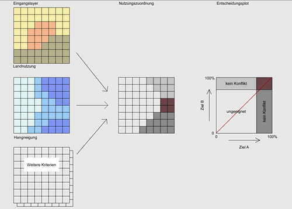

Schema einer Multikriterienanalyse (MKA)
Im einfachsten Fall der Entscheidungsunterstützung mit GIS geht es darum, Räume oder Standorte zu finden, die für ein Ziel mehrere Kriterien erfüllen oder optimieren. Im Fallbeispiel der Gemeinde LAhntal besteht das Ziel in einem ersten Ansatz darin, die besten Lebensräume für die Wildkatze im Gemeindegebiet zu identifizieren. Unter der Annahme, dass die Wildkatze siedlungsferne und bewaldete Gebiete bevorzugt, lassen sich zwei Suchkriterien formulieren. Gibt es, wie in diesem Fall, mehrere Kriterien, aber nur ein Ziel, spricht man von einer Multi Criteria Evaluation (MCE).
Problemdefinition: Der erste Schritt einer MCE ist die Definition des Problems. Im Fallbeispiel der Gemeinde St. Gittal könnte die Problemdefinition lauten: „Welche Teile des Gemeindegebietes sind als Lebensraum für den Wolf geeignet“.
Kriterienauswahl: Der nächste Schritt ist die Auswahl der Kriterien. Die ausgewählten Kriterien sollten die Eigenschaften des gesuchten Gebietes oder Raumes möglichst gut widerspiegeln. Kriterien können sowohl räumlicher (Geometrie, Topologie) als auch sachlicher (Eigenschaften) Natur sein. Ein räumliches Kriterium ist z.B. die Entfernung des potenziellen Wolfslebensraumes zur nächsten Siedlung. Die Beschränkung auf die Landnutzungsklasse „Wald“ ist hingegen ein sachliches Kriterium. Darüber hinaus gibt es harte Kriterien, die unbedingt erfüllt sein müssen („must have“)
Operationalisierung der Kriterien:. Sind die Kriterien definiert, müssen sie in präzise, messbare Parameter übersetzt werden. Dieser Prozess wird als Operationalisierung bezeichnet. Beispielsweise könnte das Kriterium „nicht zu nahe an Siedlungsgebieten“ in die Angabe eines Mindestabstands zur Bauzone in Metern übersetzt werden. Man spricht von der Operationalisierung der Kriterien in quantifizierbare Größen. In den meisten Fällen entsprechen die einzelnen Kriterien jeweils einem Datenlayer im GIS (Siedlungsnähe-Layer, Wald-Layer).
Schaffen eines gemeinsamen Bezugs - Datenintegration:. Die Datenintegration schafft Vergleichbarkeit durch gemeinsame Maßstäbe, gleiche Datentypen (Raster/Vektor) sowie gleiche Auflösungen und gleiche Bezugssysteme.
Verschneidung: Identifikation der geeignetsten Räume: Nun werden die verschiedenen Kriterien miteinander verschnitten, um die gesuchten Standorte oder Räume zu identifizieren. Dazu gibt es verschiedene Möglichkeiten:
- Logische (boolesche) Verschneidung: In jeder Datenschicht gibt es nur binäre wahr/falsch-Informationen (true/false, Wald/Nicht-Wald), aus deren logischer Verschneidung die gesuchten Standorte und Räume ermittelt werden. Die Boolesche Verschneidung wird in der Einheit „Boolesche Verschneidung“ behandelt.
- Gewichtete Verschneidung: Die einfache Unterscheidung zwischen wahr und falsch wird der komplexen Realität fast nie gerecht. Eine wesentliche Verbesserung der Ergebnisse kann erreicht werden, wenn die einzelnen Datenschichten gewichtet werden. Im Fallbeispiel könnte z.B. die Entfernung zur Siedlung viel weniger wichtig sein als das Rückzugsgebiet Wald. Um dies zu erreichen, könnte die Ebene der Siedlungsentfernung mit einem Gewichtungsfaktor von z.B. 5 multipliziert werden. Diese Themen werden separat behandelt (Einheiten „Gewichtete Verschneidung“ und „Bestimmung der Gewichte“).
- Fuzzy Overlay: Erhebungsfehler bei den Eingangsdaten und falsch gewählte Kriterien bergen die Gefahr von Bewertungsfehlern. Bei einer Multikriterienbewertung können geeignete Gebiete verkannt und ungeeignete fälschlicherweise als geeignet eingestuft werden. Eine Lösung dieses Problems besteht darin, scharfe Grenzen aufzulösen. Für räumliche Daten bedeutet dies, dass Grenzen nicht als scharfe Linien, sondern als Übergangszonen dargestellt werden. Bei den Attributen ersetzen unscharfe Wertebereiche die scharfen Klassengrenzen. Dieses Konzept basiert auf der Idee der Fuzzy Set Theory („fuzzy“ im Sinne von „unscharf“). Auf diese Ansätze wird erst im Intermediate Level näher eingegangen.
- Überprüfung/Bewertung: Im letzten Schritt sollten die Ergebnisse mit einer Referenz verglichen werden. Dies ist möglich, wenn im Feld erhobene Referenzdaten („ground truth“) herangezogen werden können. Dieser letzte Schritt wird häufig vernachlässigt. Aber Achtung: Eine Eignungskarte ohne Abschätzung ihrer Qualität und Zuverlässigkeit ist oft das Papier nicht wert, auf dem sie gedruckt wurde!
Multi-Ziel-Analyse (Multi Objective Evaluation, MOE)
Wenn die Gemeinde Lahntal den Dorffrieden in Caldern erhalten will, muss sie versuchen, die Wünsche der Naturfreunde, der Landwirte und der Erholungssuchenden unter einen Hut zu bringen. Es ist leicht zu erkennen, dass die Ziele der verschiedenen Interessengruppen sehr unterschiedlich sind.
- Es gibt Fälle, in denen verschiedene Nutzungsansprüche auf der gleichen Parzelle realisiert werden können. Wanderwege können durchaus durch einen Wolfslebensraum führen, wenn bestimmte Regeln eingehalten werden.
- Landnutzungsansprüche können sich auch gegenseitig ausschließen. Eine Parzelle kann nicht gleichzeitig Wolfshabitat, Lehrpfad und Golfplatz sein. In solchen Fällen gilt es, verschiedene Planungsvarianten gegeneinander abzuwägen und schließlich den Raum entsprechend seiner Eignung auf die verschiedenen Nutzungen aufzuteilen.
Im Gegensatz zur MCE liegen hier also mehrere Ziele vor, man spricht daher von einer Multi Objective Evaluation (MOE).

Die Abbildung zeigt das Ergebnis einer Eignungsanalyse mit zwei sich ausschließenden Nutzungsansprüchen für den Marburg Open Forest (MOF) bei Caldern: Die beiden Ziele heißen „geeignet als Wildkatzenlebensraum“ (Ziel A) und „geeignet für Erholungsnutzung“ (Ziel B). Ganz links sieht man eine Reihe von Input-Layern der Eignungsanalyse, darunter die Layer „Landnutzung” (oben) und „Hangneigung“ (Mitte). Die Karte daneben zeigt die räumliche Zuordnung der Waldfläche zu den beiden Nutzungsarten. Weiß ist weder für (A) noch für (B) geeignet. Dunkelgrau wurde (A) und hellgrau (B) zugeordnet. Wo sich hell- und dunkelgrau überlagern, besteht ein Nutzungskonflikt (rot). Im Diagramm rechts kann jeder Punkt des Raumes entsprechend seiner Eignung für (A) und (B) eingetragen werden. Je mehr ein Punkt einem Kriterium entspricht, desto höher ist der entsprechende Prozentwert. Sowohl für (A) als auch für (B) kann ein Grenzwert angegeben werden, ab dem ein Punkt der entsprechenden Nutzung zugeordnet wird. Im roten Rechteck oben rechts befinden sich alle Punkte mit einem Nutzungskonflikt. Für sie muss nun im Einzelfall entschieden werden, welcher Nutzungsklasse sie zugeordnet werden sollen. Im einfachsten Fall wird ein Konfliktpixel der Nutzung zugeordnet, für die es besser geeignet ist: Liegt das Konfliktpixel im Entscheidungsplot oberhalb der roten Linie, erhält es die Nutzung (B), andernfalls (A).